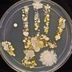

Project Portfolio

NASA Solar System Explorer GUI
- Group project that allows users to interact with NASA API
- Queries NASA API to retrieve images taken by Mars rovers: Spirit, Curiosity & Opportunity
- Fetches asteroid data and NASA picture of the day
- Built with HTML/CSS/Javascript/jQuery
Web Site Collector
- Tool to collect and organize web sites of interest
- Uses mongoDB for site storage
- Built with HTML/CSS/node.js/Javascript/jQuery
Python Investor
- Python script for acquisition and basic analysis of stock ticker data
- Scrapes yahoo finance HTML for relevant stock ticker data using regular expressions
- Retrieves financial data from quandl API
- Written in python using pandas and numpy libraries
Periodic Table Hangman Game
- In browser hangman game where user guesses name of randomly selected chemical elements
- Built with HTML/CSS/Javascript
Austin Housing Market Analysis
- Plots housing market data over time for Austin, Tx and all 50 states
- Retrieves housing index data from quandl API
- Written in python using pandas and matplotlib libraries
HomeScout
- Group project that queries housing market database with user defined housing market parameters
- Uses mapbox SDK to display map of Austin with matching zip code areas highlighted
- Built with HTML/CSS/Javascript/node.js/handlebars.js/jQuery/sequelize/mySQL
Fine Art Trivia Game
- Timed web-browser game where player guesses artists of famous European paintings
- Built with HTML/CSS/Javascript/jQuery